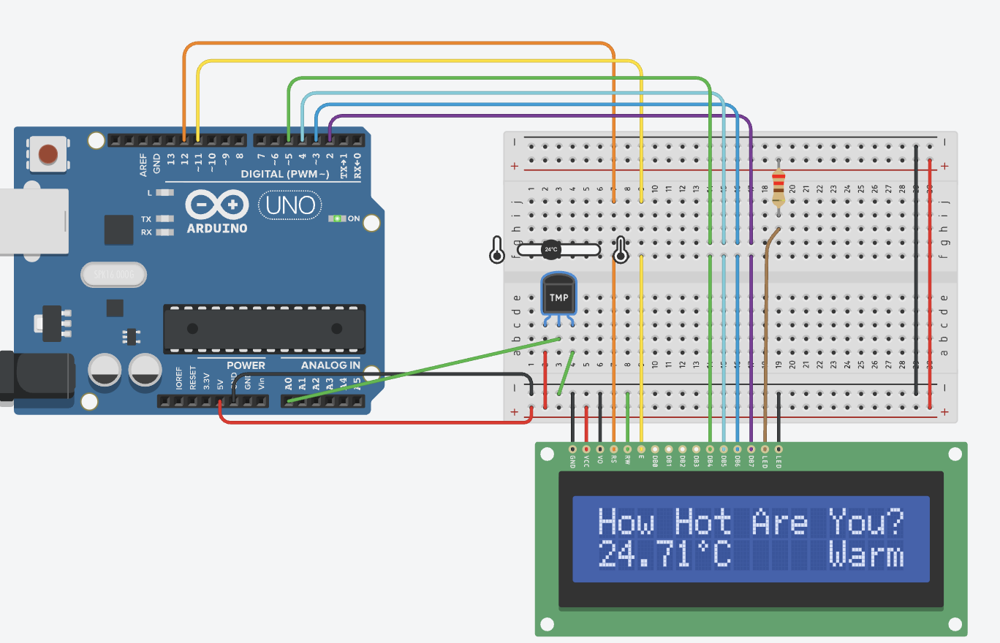
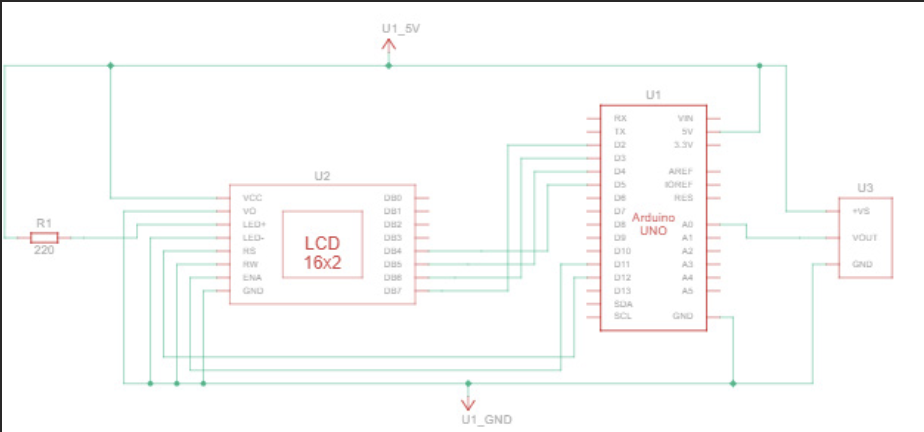
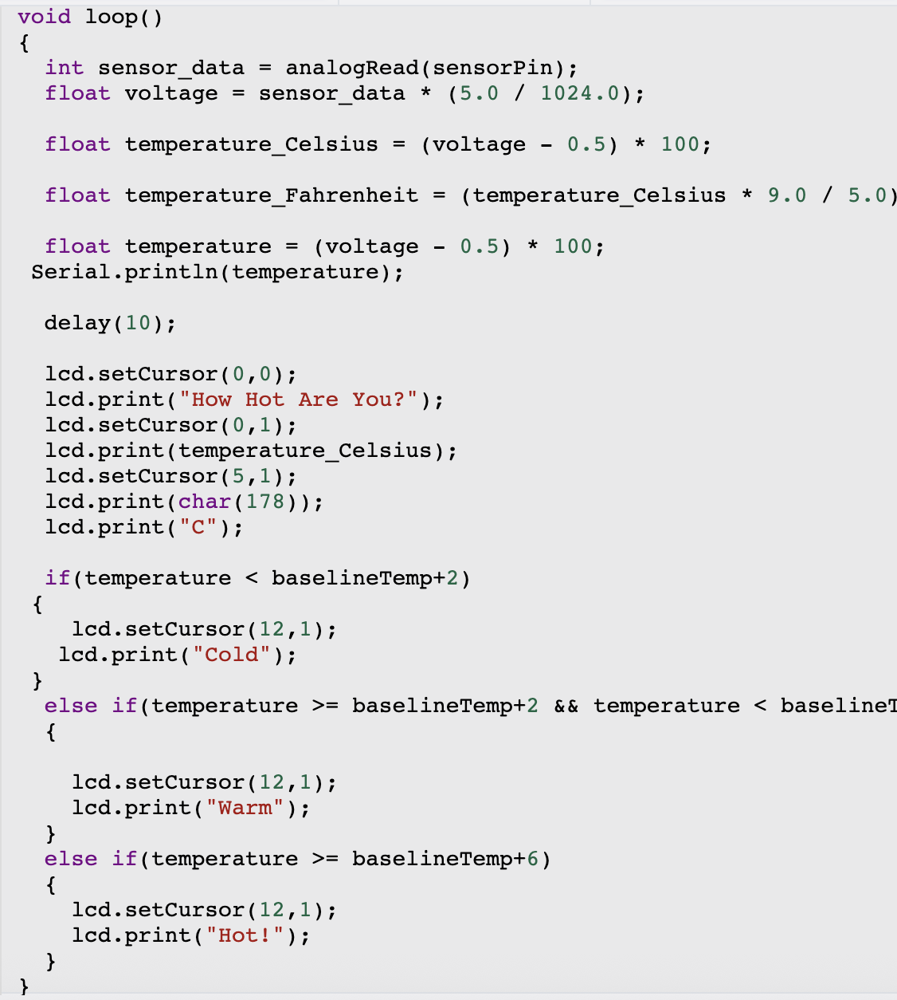

Temperature Sensor LCD System
Arduino-based system that reads body temperature and classifies it as cold, normal, or feverish.
Goal
Build a system that displays a person's temperature on an LCD and indicates if they are within a safe range, cold, or feverish.
Solution
- Used an Arduino and breadboard to connect an LCD and an analog temperature sensor.
- Leveraged the built-in ADC to convert analog readings to digital values.
- Implemented logic to map temperature ranges to status labels on the display.
Results
Successfully created a compact prototype that provided real-time temperature feedback and status, demonstrating integration of hardware, firmware, and user-facing output.